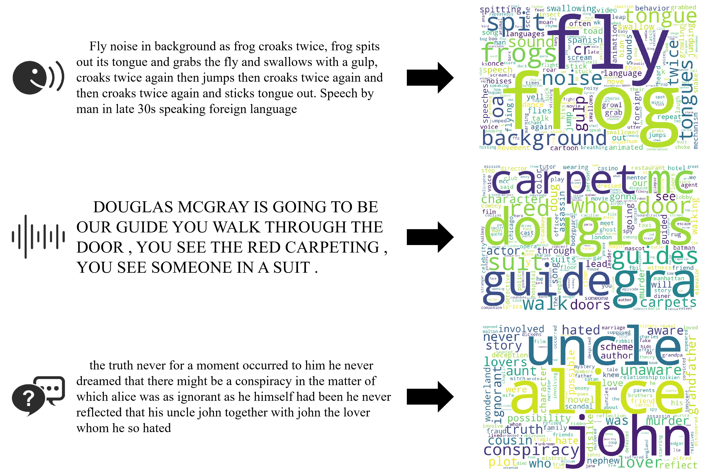

LSAR: Sparse Lexical Representation Learning for Efficient and Interpretable Audio Retrieval
IntroductionReal-time audio retrieval for multimodal RAG
Audio is becoming a primary query and knowledge modality for MLLMs, but today's retrievers force a poor trade-off. ASR cascades offer lexical matching yet lose non-verbal evidence and propagate transcription errors. Dense models preserve semantics but require opaque, memory-heavy vector search. LSAR introduces a third path: learn a non-negative, highly sparse audio representation in a text vocabulary space, expose activated terms as evidence, and retrieve candidates using dynamic-pruned posting lists.
Motivation: the missing middle
ASR → text cascade
- Non-verbal events disappear
- Errors propagate into retrieval
- Generation adds indexing latency
Dense audio retrieval
- Relevance is difficult to inspect
- Large embedding banks
- Exact search scales with corpus size
Core contributions
- 1New retrieval primitiveDirect audio-to-lexical mapping compatible with existing sparse search infrastructure.
- 2Cross-modal alignmentLearn audio term activations from a frozen SPLADE-v3 text teacher during training.
- 3Three complementary viewsContent, Caption, and Logic heads ground words, events, and QA associations.
- 4Practical first stagePrune aggressively at high recall, expose keyword evidence, and plug directly into downstream dense rerankers.
Inspectable lexical evidence

Retrieval workflow
Architecture: inference and training
Codebook 0 · Content stream
Coarse semantic structure
Codebooks 1-7 · Residual streams
Fine acoustic and paralinguistic residuals
Fuse per timestep: content embedding + projected residuals
Three representation mechanics
Lexical activation
xk = maxt log(1+ReLU(Wkht))ReLU creates exact zeros. Log compression prevents dominant activations. Temporal max pooling retains the strongest evidence.
Coarse-to-fine alignment
top-16 → 32 → 64 → 128 termsTraining starts with core lexical anchors. It then expands toward medium-strength and long-tail terms, gradually improving first-stage recall.
Index-aware learning
L=Lbid + Ldst + Lmar + Lrnk+ Lpos + Lspr + LpstAlignment matches audio and text. Ranking improves robustness. Sparsity and posting penalties preserve useful evidence while controlling index cost.
Training data & evaluation
Content 3,460 h
LibriSpeech + GigaSpeech-LTranscript-level grounding
Caption ≈760k clips
AudioCaps + TextrolSpeech+ SpeechCraft descriptions
Logic ≈200k QA
LibriSQA + SLUE-SQA-5+ Spoken SQuAD
Evaluation 6 benchmarks
4 in-domain + 2 zero-shotESC-50 and Clotho transfer
Headline results
and AudioCaps
for full sparse recall
before dense reranking
First-stage retrieval
| Dataset | Setting | Recall@10% | Min. Sub. | Latency |
|---|---|---|---|---|
| LibriSpeech | In-domain | 1.0000 | 8.96% | 3.09 ms |
| AudioCaps | In-domain | 1.0000 | 7.11% | 3.43 ms |
| ESC-50 | Zero-shot | 0.9570 | 14.00% | 2.17 ms |
| Clotho | Zero-shot | 0.8173 | 17.92% | 3.58 ms |
| LibriSQA | In-domain | 0.8352 | 16.73% | 2.96 ms |
| SLUE-SQA | In-domain | 0.7449 | 24.94% | 3.02 ms |
10M-scale efficiency
Index memory · 10M items
Single-query latency
Two-stage retrieval
Why three heads?
Speech
+8.3R@10% points on LibriSpeech: Content-only 0.9167 → Full 1.0000.
Environmental sound
+19.7points on ESC-50: Caption-only 0.7600 → Full 0.9570.
Caption retrieval
+16.4points on Clotho: Caption-only 0.6532 → Full 0.8173.
Spoken QA
+41.0points on LibriSQA: Logic-only 0.4253 → Full 0.8352.